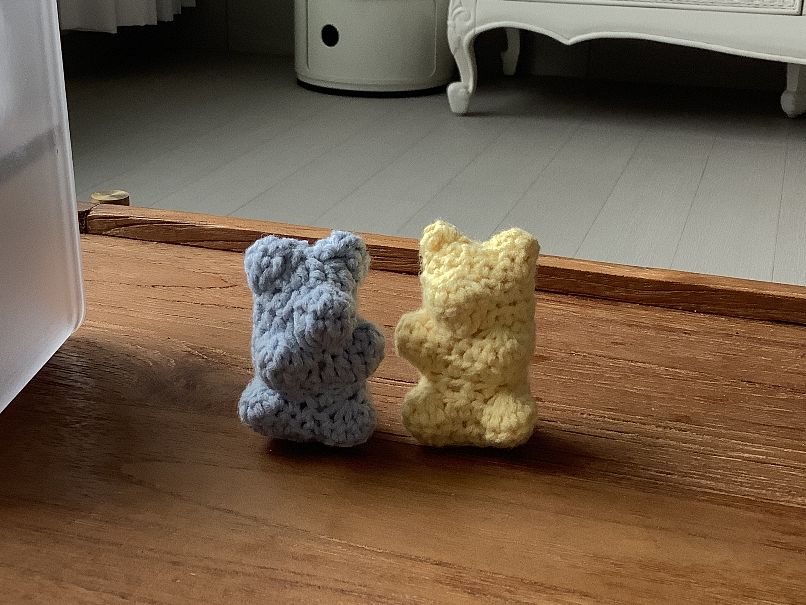

🧶뜨개질🧶

제 취미는 뜨개질🧵입니다!
머릿속이 복잡할 때 좋아하는 색의 실로 한 땀 한 땀 뜨다 보면,
머릿속도 차분해지고 시간 가는 줄도 몰라요!
특히, 코바늘로 작은 인형을 만들어 선물하는 것을 좋아합니다🫶
제 취미는 뜨개질🧵입니다!
머릿속이 복잡할 때 좋아하는 색의 실로 한 땀 한 땀 뜨다 보면,
머릿속도 차분해지고 시간 가는 줄도 몰라요!
특히, 코바늘로 작은 인형을 만들어 선물하는 것을 좋아합니다🫶